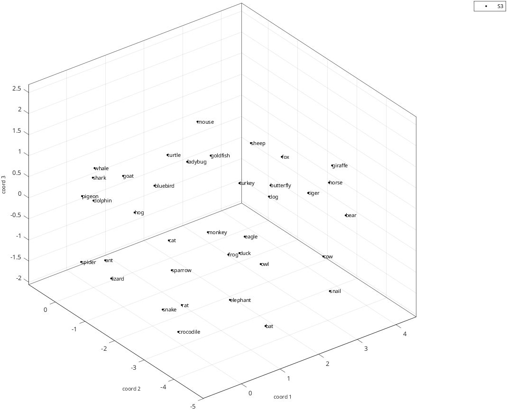
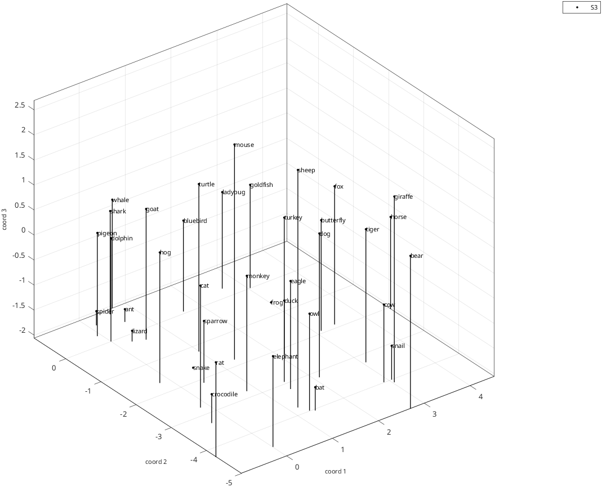
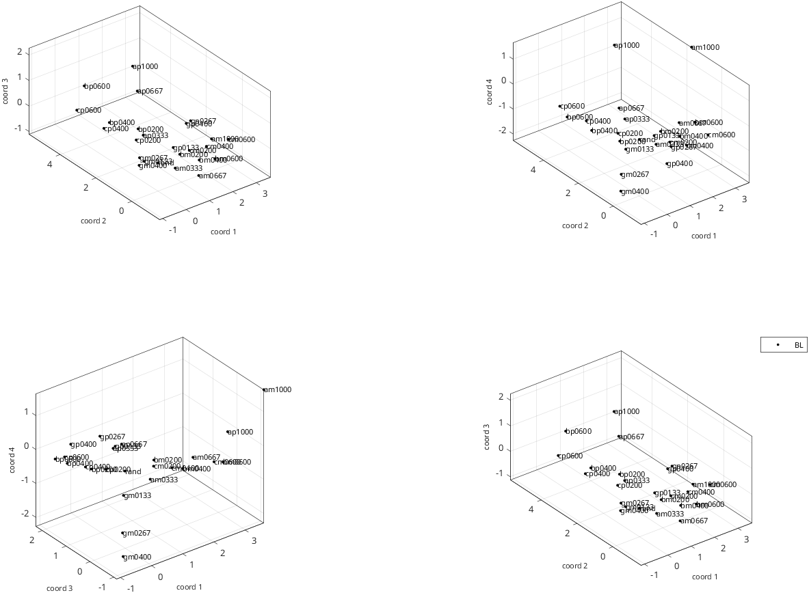
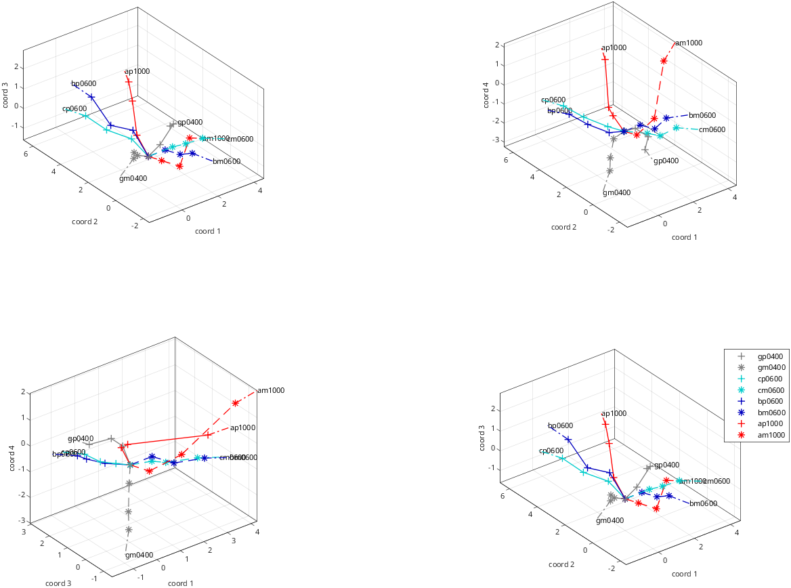
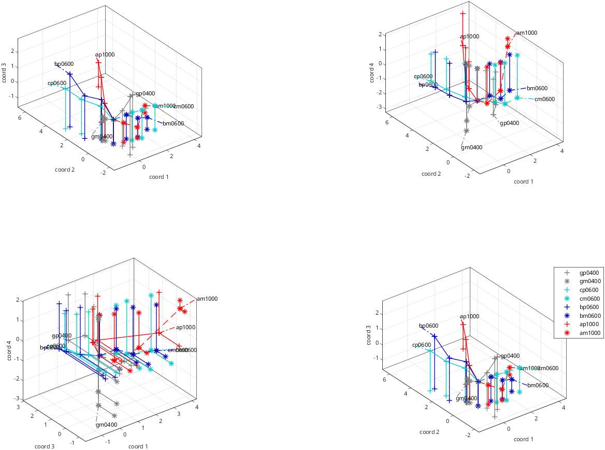
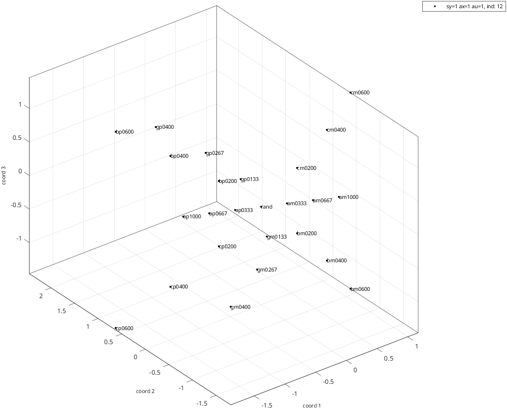
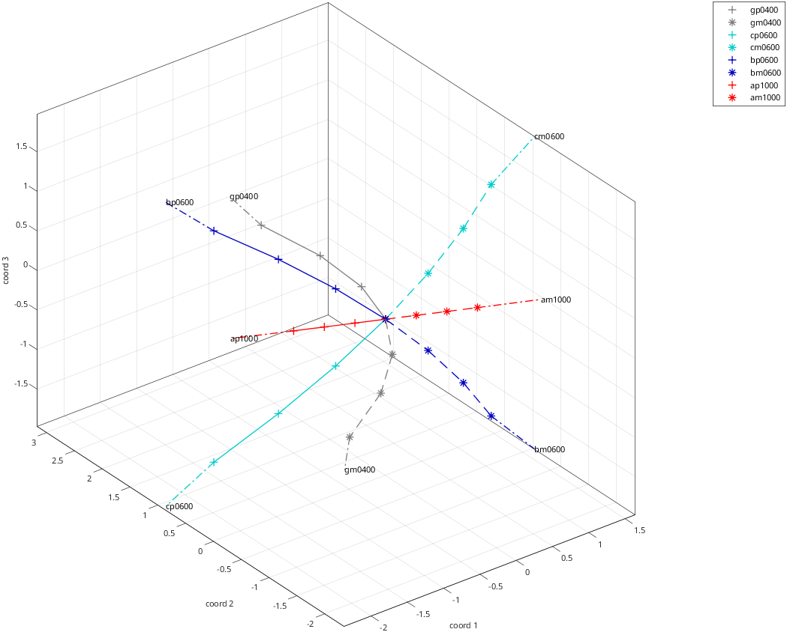
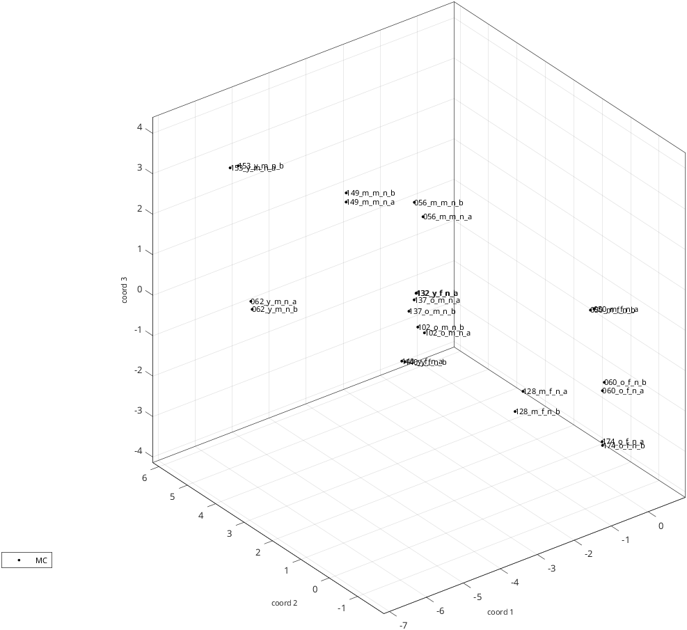
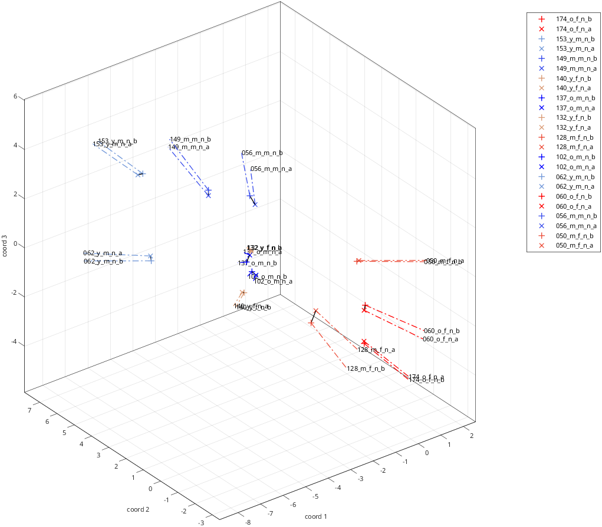
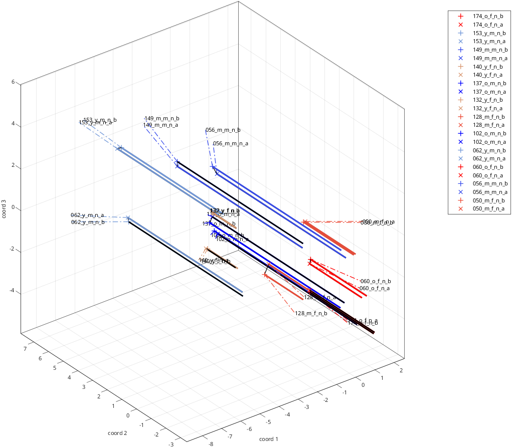

rs_disp_coordsets_demo
Display coordinate sets, one option at a time, in four kinds of data
This demo reads four datasets and plots each of them, adding one display option at a time so that you can see what each option changes. Every step below shows the code, what it prints, and the figure it draws.
- Animal images: the default plot, then dropped perpendiculars.
- Binary textures: a 4-dimensional model and rays, which need
stimulus coordinates. - Binary textures again: the same stimuli, from a
quadratic form model. - Faces: stimulus names that need a custom interpreter, and rays with a single point.
See also: rs_get_coordsets, rs_disp_coordsets, rs_disp_enh_coordsets
Setup
The defaults of the toolbox can be customized in each installation. To get the
same plots everywhere, this demo uses the defaults stored in a fixed file,
through rs_aux_force, so you can skip this block when you use the toolbox
in your own analyses.
=struct;
={};
All four examples read their file with these options, so we set them only once.
=auxs_force;
=1; %the file holds experimental data
=1; %read without asking questions at the console
=1; %print a log of what is read
=1; %one dataset per callExample 1: animal images
The animal domain has 37 stimuli and no stimulus coordinates. This dataset is
from one subject of Waraich and Victor, J. Neurosci. 2024. See
Domains for a description.
rs_get_coordsets returns a dataset structure, holding one model per dimension.
[]=;Output:
entering set 1 of 1:
primary dataset 1 is experimental data
37 different stimulus types found in data file ./samples/animals/image_coords_S3
37 different stimulus types found in setup file [unused]
37 of 37 labels found
coordinate sets with 1 to 7 dimensions read.
datasets selected:
set 1: dim range [ 1 7] label: samples/animals/image_S3
##### rs_warning: cannot find stimulus coordinates, so cannot identify rays
The warning is expected: without stimulus coordinates there are no rays to find.
ordsets
The set metadata structure describes the dataset. We will use the subject ID
as the label of the plots.
;Output:
type: 'data'
paradigm_type: 'animals'
paradigm_name: 'image'
subj_id: 'S3'
subj_id_short: 'S3'
extra: []
dim_list: [1 2 3 4 5 6 7]
nstims: 37
label_long: './samples/animals/image_coords_S3'
label: 'samples/animals/image_S3'
pipeline: [1x1 struct]
The default plot
With no other options, rs_disp_coordsets shows the 3-dimensional model and
labels each point with its stimulus name.
=struct;
=data_animals.sets{1}.subj_id; %label the dataset by subject ID
;
Dropped perpendiculars
A 3-dimensional plot on a flat page makes depth hard to judge. Dropping a
perpendicular from each point makes its position easier to read.
perp_data_dims has one entry per coordinate, and here 1 selects coordinate 3.
We also omit the marker at the foot of each line.
=[];
=0;
;
Example 2: binary textures
This domain has stimulus coordinates. A stimulus name gives its coordinate
and value: gp0400 means coordinate g at +0.4, gm0400 means coordinate g
at -0.4, and rand is the origin. The data are from Victor and Conte, VSS 2025.
This time there is no warning, because the setup file provides the coordinates.
[]=;Output:
entering set 1 of 1:
primary dataset 1 is experimental data
25 different stimulus types found in data file ./samples/bwtextures/bgca3pt_coords_BL_sess01_10
suggested ray permutation for bgca:
2 1 3 4
25 different stimulus types found in setup file ./samples/bwtextures/bgca3pt9.mat
25 of 25 labels found
coordinate sets with 1 to 7 dimensions read.
datasets selected:
set 1: dim range [ 1 7] label: samples/bwtextures/bgca3pt_BL_sess01_10
Plotting more than three dimensions
A 4-dimensional model does not fit in one 3-dimensional plot, so it is shown as
several plots of 3 coordinates each. coord_group_method='keepone' keeps
coordinate 1 in every plot and steps through the others, giving the groups
[1 2 3], [1 2 4] and [1 3 4]. With if_legend=-1 these plots have no legend,
and an extra subplot repeats the first group with the legend next to it.
=struct;
=data_textures.sets{1}.subj_id;
=4;
='keepone';
=-1;
;
Rays
The labels above overlap, and nothing shows that the stimuli are organized along
axes. Reading the file also produced a ray structure in aux_textures.rayss,
which groups the stimuli that lie along the same line through the origin.
rs_disp_enh_coordsets draws those lines. With if_points=0 it draws only the
rays. Each color is one coordinate, with + for its positive values and * for
its negative values.
=struct;
=0;
=;
;
Rays and perpendiculars
The display options of rs_disp_coordsets also work here. In perp_data_dims,
1 drops a perpendicular along that coordinate to the bottom of the plot, and -1
raises it to the top. So coordinate 3 goes down, and coordinate 4 goes up.
=[];
=;
;
Example 3: binary textures from a quadratic form model
Here we read the same file name as in Example 2, but with input_type=2 it
gives the stimuli of a quadratic form model, not the measured coordinates of
subject BL. Compare the log below with the one of Example 2: the dataset is now
a "qform model", with models of up to 10 dimensions, one for each coordinate of
this domain.
=aux_in;
=2;
[]=;Output:
entering set 1 of 1:
primary dataset 1 is qform model
suggested ray permutation for bgca:
2 1 3 4
25 different stimulus types found in setup file ./samples/bwtextures/bgca3pt9.mat
model 12 (sy=1 ax=1 au=1) loaded from ./samples/bwtextures/btc_allraysfixedb_avg_100surrs_madj.mat
datasets selected:
set 1: dim range [ 1 10] label: samples/bwtextures/bgca3pt9 c:aug q:samples/bwtextures/avg_madj m:qform
The paradigm type of a model is not recognized from the file, so we set it. The enhanced display uses it to choose the colors and symbols of the stimuli.
data_qform.sets{1}.paradigm_type='btc';
;Output:
type: 'qform'
paradigm_type: 'btc'
paradigm_name: []
subj_id: 'sy=1 ax=1 au=1, ind: 12'
subj_id_short: 'sy=1 ax=1 au=1'
extra: []
dim_list: [1 2 3 4 5 6 7 8 9 10]
nstims: 25
label_long: './samples/bwtextures/bgca3pt9.mat c:aug q:./samples/bwtextures/btc_allraysfixedb_avg_100surrs_madj.mat m:qform'
label: 'samples/bwtextures/bgca3pt9 c:aug q:samples/bwtextures/avg_madj m:qform'
pipeline: [1x1 struct]
The default plot, labeled with the name of the model:
=struct;
=data_qform.sets{1}.subj_id;
;
And with rays. The rays of the model are close to straight lines through the origin, while the rays from data in Example 2 bend.
=struct;
=0;
=;
;
Example 4: faces
These stimuli are from the MPI FACES database (Ebner, Riediger and Lindenberger,
Behavior Research Methods, 2010). A name like 132_y_f_n_b encodes the identity
(132), age range (y), gender (f), expression (n) and database set (b).
By default a ray needs at least 3 points besides the origin, and with these
stimuli no ray has that many. ray_minpts=1 lets a single point define a ray.
=aux_in;
=1;
[]=;Output:
entering set 1 of 1:
primary dataset 1 is experimental data
24 different stimulus types found in data file ./samples/faces/faces_mpi_en2_fc_coords_MC_sess01_10
24 different stimulus types found in setup file ./samples/faces/faces_mpi_en2_fc.mat
24 of 24 labels found
coordinate sets with 1 to 7 dimensions read.
datasets selected:
set 1: dim range [ 1 7] label: samples/faces/faces_mpi_en2_fc_MC_sess01_10
Stimulus names with underscores
MATLAB reads an underscore in a label as the start of a subscript. Setting the interpreters to 'none' prints the names as they are.
=struct;
=data_faces.sets{1}.subj_id;
='none';
='none';
;
Rays
Each face is now a ray of one point, so the display gives it a color and a symbol from its name: red shades for f and blue shades for m, with + for database set b and x for database set a.
=struct;
=0;
=;
;
Rays and perpendiculars
This time the perpendiculars run along coordinate 2, with thicker lines and no markers at their feet.
=[];
=0;
=2;
=;
;
Next steps
rs_disp_coordsets_demo_opposites compares several subjects in one plot, and
rs_align_disp_enh_coordsets_demo arranges several plots in one figure.